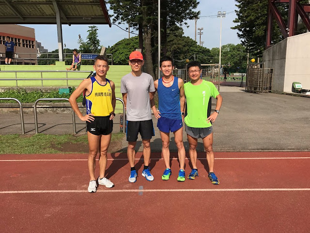

跑步的竅門&熱情

因為前陣子跟晏慶在花蓮一起練了一個星期，分享在臉書後智湧看到問我可以在回桃園老家時也一起訓練嗎？我自己最喜歡跟想變強的人一起練了，所以立刻約好了兩天團練的時間：
- 第一天的課表是：10 趟 400m 間歇，間休 60~75 秒
- 第二天的課表是：30 圈 96 秒節奏跑
課表都是智湧開的，我就跟著練，跟不到就自己休息：第一天只跟到第八趟喘不過氣來，休了一趟。但除了前三趟在 76 秒附近之外，後面都能跑到 70~75 秒之間，很是痛快，很久沒跑那麼快了。
智湧在今年三月的萬金石全程馬拉松跑出了 2 小時 40 分 13 秒的成績，也打破了自己的 PB。他說：「我是個對成績目標比較沒有強烈追求的人，所以每次破 PB 也沒有太大的感動；因為沒有目標，所以也不會刻意為了成績吃苦訓練。」「也許是怕設定了達不到吧！」智湧邊跑邊笑笑地說，「我覺得我不太能吃苦，因為過去脛骨內側一直受傷，所以也一直不敢太過刻意去追求成績。」
聽到這些話的過程中一直想到老子說的「無為而無不為」，因為沒有設定目標成績，反而一直能有所突破，這個道理在各個方面不斷被印證。
慢跑時智湧又談到他的女兒在泳隊訓練，成績一直無法突破(剛好跟他相反)，所以他建議她要設定比賽的成績目標。智湧說：「我這麼告訴女兒時又有一點矛盾，因為這跟我自己的做法剛好相反。」這個真實的故事讓我極為印象深刻，回家的路上一直反覆思量。
我們還是要設定目標才對；只是該目標不是未來的「成績」，而是當下每一次的「訓練目標」：該專注訓練哪個重點、該如何完成一個高品質的訓練課表、該如何恢復，以及該如何認識自己現在的弱點、該如何改進……等。這些目標設定將帶來訓練的熱情與動機。
任何一項運動表現要好，必須要有強烈的訓練動機，最好是想要變強的動機，而非想要打敗人或破 PB 的動機，這兩者間有著微妙且本質上的差別。但只有動機不夠，就像具有強烈的開車或彈琴的熱情並無法有好的表現，所以還必須要有方法、有門道。
目標→熱情與動機→提升體能與力量→優秀的技術→運動表現
熱情與動機可以訓練出強大的體能與力量(體力)，所有的體力都必須經過技術這個「竅」才能發揮出來。如果這個「竅」不夠大，體力再好也過不去，運動表現也會出不來。
「所謂有天分的選手是自己就能『開竅』，但 99%的人都沒有這樣的天分，必須有方法地、刻意地、專注地去打開這道技術的『竅』。」談到最後，大家都要準備去上班前，我分享著近年來研究到的這段體悟。
--
第二天早上五點起床，用匡寓教的方法，在堅果上放了兩匙奶油後用電鍋乾蒸加熱來吃，好好吃，又有飽足感。六點十分出門，慢跑兩公里到中原大學操場準備跟智湧跑每圈 96 秒的課表。
我先提議帶大家做彈跳訓練(這也是今天晚上 UA 挑戰營要教學員的新動作)，「彈」了 16 分鐘後接著熱身六圈後開始主課表，智湧則很穩定地用同樣的配速跑完 30 圈，最後自己只完成了 23 圈，中間休息了兩次。原本預估休一次而已，但在昨天很疲勞的狀況下今天能跑這樣已經很不錯了，跑完在廁所沖洗之後竟出現長久以來不曾出現的「清爽感」、全身的皮膚瞬間一陣麻爽，那幾秒的時間無比幸福。回程的路上有點期待下次再跟著智湧以同樣的配速再跑一次，看是否可以再多跟幾圈。
練完後在中原大學的星巴克裡邊喝咖啡邊談跑步，也針對一些跑步的問題做了簡單的分享……對現在的我來說，能跟真心想變強的跑者分享這幾年來研究的知識是人生最大的樂趣之一了！聽智湧十年的跑步經歷，以及對自己到底是「屬於認真還是不認真的跑者」之思考。「我其實很怕訓練時吃太多苦」，智湧說……那剛剛的 96 秒 30 圈是怎麼回事，聽說他們還會練到 60 圈以上，這不是刻苦訓練嗎？而且聽他的描述，他的訓練相當自律，每天早上先訓練，把跑步排在每天最優先的項目。
我的詮釋是：「苦，不能常常吃或一次吃太多」，訓練應該就必須像智湧這樣適量斟酌。訓練當然會覺得苦，但因為身心都已經適應了，所以並不會太難受。這讓我想到村上春樹寫在書中的一段話：「寫小說是不健康的作業，這種主張，基本上我想贊成。我們在寫小說的時候，也就是在用文章把故事塑造起來時，無論如何都必須把人性中根本存在的毒素挖出表面來。作家多少必須向這毒素正面挑戰，明明知道危險卻必須俐落地處理。沒有這種毒素的介入，是無法進行真正意義上的創造行為的（很抱歉以奇怪的比喻來說，就像河豚那樣有毒的地方才最美味，或許有點像）。這不管怎麼想都不能算是『健康的』作業吧。」(摘自村上春樹：《關於跑步，我說的其實是……》，台北市：時報文化，2008 年 11 月出版，頁 113)
若只是一味倚靠意志力，強調忍痛與吃苦的訓練，身心再強大，久了一定會出問題；有些人是過量訓練、受傷或熱情被消磨殆盡而直接退出該項運動。
想要像村上一樣持續維持創造力或像某些跑者一樣維持訓練的活力，我們必須學習像智湧這一類的跑者在生活的平衡中「俐落地處理訓練的苦(毒素)」，才能變強！這是一種不健康的作業，但在這種作業的刺激下我們才會一直適應→變強。
--
「道」，意思是「道路」或「途徑」，如同柔道、劍道、茶道(泡茶的儀式)和花道(插花藝術)。所有這些休閒活動，在日本主要被視為一種發展自我的方式。「一種修練自己成為圓滿的人的方法」。我對「道」的解讀是「一」，所以老子中有句話「道生一」；道，不是完全的空「無」一物、不是「零」，而是「一」，是一種素樸致極的境界。
所謂的「求道者」，是能夠在極簡的動作中體驗到外人所無法感受到的差異與變化，變化帶來「興」發感動與樂「趣」。像是插花、倒茶、投球或是跑步這麼單純的一個動作中必須能分辨出極細微的差異與變化與從中體悟萬千樂趣；以跑步來說在外人看來是既枯燥又單調、動作千篇一律，那是因為他們還無法體驗到其中細微的差異(該項動作的知覺不夠敏銳)，沒有差異就很難繼續形成更多的「興趣」。
興趣，是熱情的燃料。
所以不能只求苦練。苦，只是在創造興趣與求道的一個必經過程，而非目的。求道，才是目的。道，並不玄，它是一種去除多餘之後，只留下最樸實純粹的部分，同時從樸實之中體驗到眾妙之門的一種既苦又興味盎然的境界。
談話中智湧也提到「我平常不太注重數據，大都憑感覺，以『傻練』掛帥」。什麼都不想的傻練也很重要，有時候懂太多科學、數據與知識之後反而沒有辦法專心在跑步的動作本身。有時候教了太多科學化的知識，拋棄了訓練的傻勁與熱情，不管課表再科學也沒有用。開始認真當教練的這段期間深深覺得：這兩者要不斷地反覆辯證與超越，才能不斷突破。
--
之前來過中原大學的操場練跑過好幾次了，但從沒走到大門過。因為這次機緣，跑了兩天高強度的課表，也更深刻地把「苦」、「興趣」與「道」這三個概念的思路書寫下來。